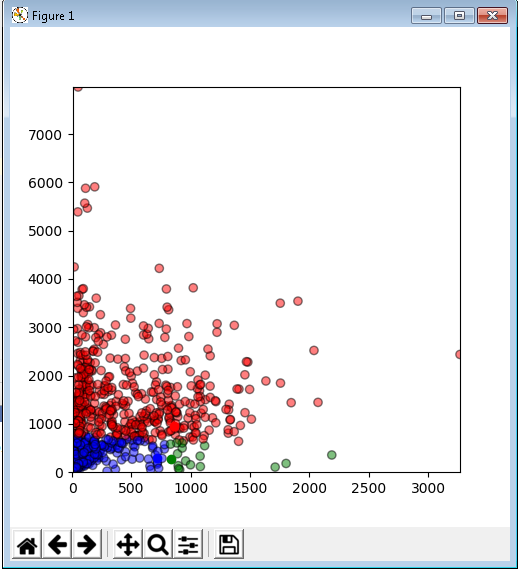
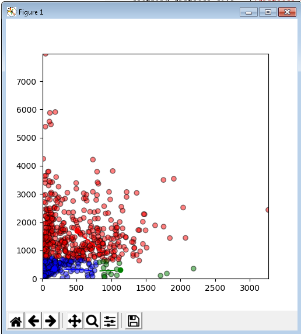
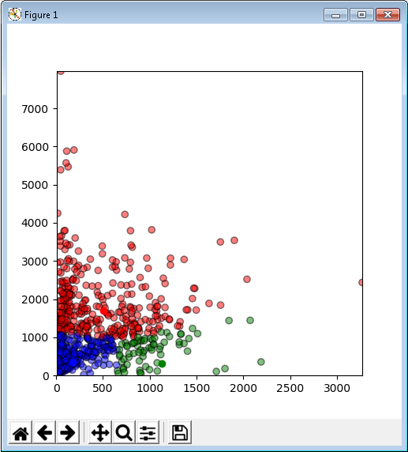
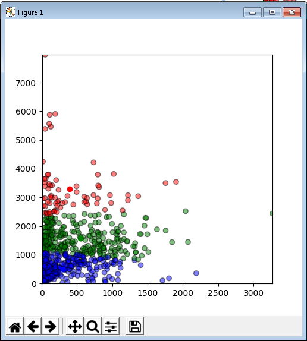
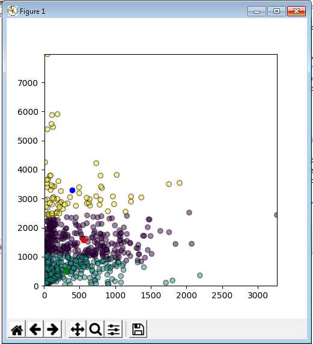

Algoritma K-Means Clustering.¶
Pengertian K-Means Clustering :¶
K-Means Clustering adalah suatu metode penganalisaan data atau metode data mining yang melakukan proses pemodelan tanpa supervisi (unsupervised) dan merupakan salah satu metode yang melakukan pengelompokan data dengan sistem partisi.
Tahapan K-Means Clustering :¶
- Memilih jumlah cluster awal (K) yang ingin di dibuat.
- Memilih titik secara random sebanyak K, dimana titik ini akan menjadi pusat (centroid) dari masing-masing cluster.
- Dari dataset yand dimiliki, buat dataset yang terdekat dengan titik centroid sebagai bagian dari cluster yang sudah dibuat.
- Lakukan kalkulasi dan tempatkan pusat centroid yang yang baru untuk setiap clusternya.
Langkah-langkah menginstal library :¶
Install pandas
pip install pandasInstall matplotlib
pip install matplotlibInstall Sklearn
pip install sklearnInstall numpy
pip install numpyLangkah-Langkah implementasi K-Means Clustering :¶
Mengimportkan library untuk mendukung implementasi k means clustering dan tempat penyimpanan file atau simbol yang digunakan. :
import pandas as pd
import numpy as np
import matplotlib.pyplot as plt
import sklearnMengimport dataset yang digunakan untuk pengimplemtasian k means clustering.
# Importing the dataset
data = pd.read_csv('achaacha.csv')
print("Input data and shape")
print(data.shape)
data.head()out [1] :
Input data and shape (680, 800)
Mengambil Nilai dari kolom tersebut dan mengambil gambar skema.
# Getting the values and plotting it
f1 = data['PRIMARY WITH UPPER PRIMARY (SCH2)'].values
f2 = data['PRIMARY ONLY (SCH1)'].values
X = np.array(list(zip(f1, f2)))
df= pd.DataFrame({'x':X[:,0],'y':X[:,1]})
kmeans = KMeans(n_clusters = 4, init = 'k-means++', random_state = 0)
y_kmeans = kmeans.fit_predict(X)
dataset['cluster'] = y_kmeans
print(dataset)Out[2]:
Centroid awal
{1: [858, 956], 2: [833, 278], 3: [718, 292]}
tahap pengambilan nilai
#Getting the values and plotting it
f1 = data['PRIMARY WITH UPPER PRIMARY (SCH2)'].values
f2 = data['PRIMARY ONLY (SCH1)'].values
X = np.array(list(zip(f1, f2)))
df= pd.DataFrame({'x':X[:,0],'y':X[:,1]})
kmeans = KMeans(n_clusters = 4, init = 'k-means++', random_state = 0)
y_kmeans = kmeans.fit_predict(X)
dataset['cluster'] = y_kmeans
print(dataset)
def assignment(df, centroids):
for i in centroids.keys():
# sqrt((x1 - x2)^2 - (y1 - y2)^2)
df['distance_from_{}'.format(i)] = (
np.sqrt(
(df['x'] - centroids[i][0]) ** 2
+ (df['y'] - centroids[i][1]) ** 2
)
)
centroid_distance_cols = ['distance_from_{}'.format(i) for i in centroids.keys()]
df['closest'] = df.loc[:, centroid_distance_cols].idxmin(axis=1)
df['closest'] = df['closest'].map(lambda x: int(x.lstrip('distance_from_')))
df['color'] = df['closest'].map(lambda x: colmap[x])
return df
df = assignment(df, centroids)
fig = plt.figure(figsize=(5, 5))
plt.scatter(df['x'], df['y'], color=df['color'], alpha=0.5, edgecolor='k')
for i in centroids.keys():
plt.scatter(*centroids[i], color=colmap[i])
plt.xlim(4, 3268)
plt.ylim(5, 7973)
plt.show()
kmeans
print(dataset)out [3] :
Centroid Baru
{1: [505.2629213483146, 1699.0786516853932], 2: [1130.5, 311.0625], 3: [178.76712328767124, 362.9178082191781]}

update pengambilan nilai
import copy
old_centroids = copy.deepcopy(centroids)
def update(k):
for i in centroids.keys():
centroids[i][0] = np.mean(df[df['closest'] == i]['x'])
centroids[i][1] = np.mean(df[df['closest'] == i]['y'])
return k
centroids = update(centroids)
print(centroids)
fig = plt.figure(figsize=(5, 5))
ax = plt.axes()
plt.scatter(df['x'], df['y'], color=df['color'], alpha=0.5, edgecolor='k')
for i in centroids.keys():
plt.scatter(*centroids[i], color=colmap[i])
plt.xlim(4, 3268)
plt.ylim(5, 7973)
for i in old_centroids.keys():
old_x = old_centroids[i][0]
old_y = old_centroids[i][1]
dx = (centroids[i][0] - old_centroids[i][0]) * 0.75
dy = (centroids[i][1] - old_centroids[i][1]) * 0.75
ax.arrow(old_x, old_y, dx, dy, head_width=2, head_length=3, fc=colmap[i], ec=colmap[i])
plt.show()

ulangi pengambilan nilai
df = assignment(df, centroids)
# Plot results
fig = plt.figure(figsize=(5, 5))
plt.scatter(df['x'], df['y'], color=df['color'], alpha=0.5, edgecolor='k')
for i in centroids.keys():
plt.scatter(*centroids[i], color=colmap[i])
plt.xlim(4, 3268)
plt.ylim(5, 7973)
plt.show()Lanjutkan sampai semua pengambilan nilai yang ditetapkan tidak berubah lagi
while True:
closest_centroids = df['closest'].copy(deep=True)
centroids = update(centroids)
df = assignment(df, centroids)
if closest_centroids.equals(df['closest']):
print(centroids)
breakCentroid Terakhir
{1: [399.56944444444446, 3296.3194444444443], 2: [551.115107913669, 1570.4424460431655], 3: [303.3363636363636, 504.93333333333334]}
tampilkan hasil
fig = plt.figure(figsize=(5, 5))
plt.scatter(df['x'], df['y'], color=df['color'], alpha=0.5, edgecolor='k')
for i in centroids.keys():
plt.scatter(*centroids[i], color=colmap[i])
plt.xlim(4, 3268)
plt.ylim(5, 7973)
plt.show()
bandingkan hasil dengan sklearn
df= pd.DataFrame({'x':X[:,0],'y':X[:,1]})
kmeans = KMeans(n_clusters=3)
kmeans.fit(df)
labels = kmeans.predict(df)
centroids = kmeans.cluster_centers_
print(centroids)
fig = plt.figure(figsize=(5, 5))
colors = map(lambda x: colmap[x+1], labels)
plt.scatter(df['x'], df['y'], c=labels, alpha=0.5, edgecolor='k')
for idx, centroid in enumerate(centroids):
plt.scatter(*centroid, color=colmap[idx+1])
plt.xlim(4, 3268)
plt.ylim(5, 7973)
plt.show()Centroid dari hasil sklearn : [[ 552.5125448 1568.08960573] [ 301.39817629 503.6899696 ] [ 399.56944444 3296.31944444]]
